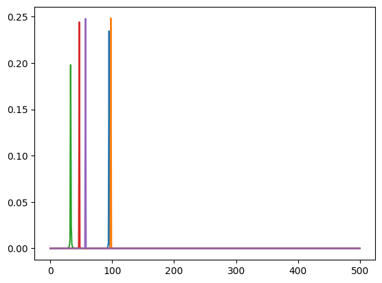
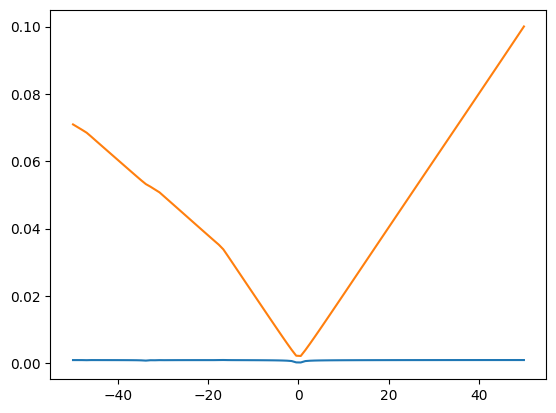

import matplotlib.pyplot as pltLosses
::: {#cell-3 .cell 0=‘e’ 1=‘x’ 2=‘p’ 3=‘o’ 4=‘r’ 5=‘t’ 6=‘i’}
import jax.numpy as jnp
import jax:::
::: {#cell-5 .cell 0=‘e’ 1=‘x’ 2=‘p’ 3=‘o’ 4=‘r’ 5=‘t’}
def quantile_function(qs, cws, xs):
r"""Computes the quantile function of an empirical distribution
Parameters
----------
qs: array-like, shape (n,)
Quantiles at which the quantile function is evaluated
cws: array-like, shape (m, ...)
cumulative weights of the 1D empirical distribution, if batched, must be similar to xs
xs: array-like, shape (n, ...)
locations of the 1D empirical distribution, batched against the `xs.ndim - 1` first dimensions
Returns
-------
q: array-like, shape (..., n)
The quantiles of the distribution
"""
n = xs.shape[0]
cws = cws.T
qs = qs.T
idx = jnp.searchsorted(cws, qs).T
return jnp.take_along_axis(xs, jnp.clip(idx, 0, n - 1), axis=0)
def wasserstein_1d(
u_values,
v_values,
u_weights=None,
v_weights=None,
p=1,
require_sort=True,
):
r"""
Computes the 1 dimensional OT loss [15] between two (batched) empirical
distributions
.. math:
OT_{loss} = \int_0^1 |cdf_u^{-1}(q) - cdf_v^{-1}(q)|^p dq
It is formally the p-Wasserstein distance raised to the power p.
We do so in a vectorized way by first building the individual quantile functions then integrating them.
This function should be preferred to `emd_1d` whenever the backend is
different to numpy, and when gradients over
either sample positions or weights are required.
Parameters
----------
u_values: array-like, shape (n, ...)
locations of the first empirical distribution
v_values: array-like, shape (m, ...)
locations of the second empirical distribution
u_weights: array-like, shape (n, ...), optional
weights of the first empirical distribution, if None then uniform weights are used
v_weights: array-like, shape (m, ...), optional
weights of the second empirical distribution, if None then uniform weights are used
p: int, optional
order of the ground metric used, should be at least 1 (see [2, Chap. 2], default is 1
require_sort: bool, optional
sort the distributions atoms locations, if False we will consider they have been sorted prior to being passed to
the function, default is True
Returns
-------
cost: float/array-like, shape (...)
the batched EMD
References
----------
.. [15] Peyré, G., & Cuturi, M. (2018). Computational Optimal Transport.
"""
assert p >= 1, "The OT loss is only valid for p>=1, {p} was given".format(p=p)
n = u_values.shape[0]
m = v_values.shape[0]
if u_weights is None:
u_weights = jnp.full(u_values.shape, 1.0 / n, dtype=u_values.dtype)
elif u_weights.ndim != u_values.ndim:
u_weights = jnp.repeat(u_weights[..., None], u_values.shape[-1], -1)
if v_weights is None:
v_weights = jnp.full(v_values.shape, 1.0 / m, dtype=v_values.dtype)
elif v_weights.ndim != v_values.ndim:
v_weights = jnp.repeat(v_weights[..., None], v_values.shape[-1], -1)
if require_sort:
u_sorter = jnp.argsort(u_values, 0)
u_values = jnp.take_along_axis(u_values, u_sorter, 0)
v_sorter = jnp.argsort(v_values, 0)
v_values = jnp.take_along_axis(v_values, v_sorter, 0)
u_weights = jnp.take_along_axis(u_weights, u_sorter, 0)
v_weights = jnp.take_along_axis(v_weights, v_sorter, 0)
u_cumweights = jnp.cumsum(u_weights, 0)
v_cumweights = jnp.cumsum(v_weights, 0)
qs = jnp.sort(jnp.concatenate((u_cumweights, v_cumweights), 0), 0)
u_quantiles = quantile_function(qs, u_cumweights, u_values)
v_quantiles = quantile_function(qs, v_cumweights, v_values)
qs = jnp.pad(qs, pad_width=[(1, 0)] + (qs.ndim - 1) * [(0, 0)])
delta = qs[1:, ...] - qs[:-1, ...]
diff_quantiles = jnp.abs(u_quantiles - v_quantiles)
if p == 1:
return jnp.sum(delta * diff_quantiles, axis=0)
return jnp.sum(delta * jnp.power(diff_quantiles, p), axis=0):::
::: {#cell-6 .cell 0=‘e’ 1=‘x’ 2=‘p’ 3=‘o’ 4=‘r’ 5=‘t’}
def compute_mag(
x: jnp.ndarray, # (b, t)
) -> jnp.ndarray:
# Compute the magnitude rfft
return jnp.abs(jnp.fft.rfft(x, axis=-1, norm="forward")):::
::: {#cell-7 .cell 0=‘e’ 1=‘x’ 2=‘p’ 3=‘o’ 4=‘r’ 5=‘t’}
def spectral_wasserstein(
x,
y,
squared=True,
is_mag=False,
):
if is_mag:
x_mag = x
y_mag = y
else:
x_mag = compute_mag(x) if not squared else compute_mag(x) ** 2
y_mag = compute_mag(y) if not squared else compute_mag(y) ** 2
# we need to normalise the mag_ffts so that they represent distributions
x_mag = x_mag / jnp.sum(x_mag)
y_mag = y_mag / jnp.sum(y_mag)
x_pos = jnp.linspace(0, 1, x_mag.shape[-1])
return wasserstein_1d(
x_pos,
x_pos,
x_mag,
y_mag,
)
batched_spectral_wasserstein = jax.vmap(spectral_wasserstein):::
::: {#cell-8 .cell 0=‘e’ 1=‘x’ 2=‘p’ 3=‘o’ 4=‘r’ 5=‘t’}
def log_mag(
x: jnp.ndarray,
eps: float = 1e-10,
):
return jnp.log(jnp.abs(x) + eps)
def log_mag_loss(
pred: jnp.ndarray, # complex valued fft of the signal
target: jnp.ndarray, # complex valued fft of the signal
eps: float = 1e-10,
distance: str = "l1",
):
"""
Spectral log magtinude loss but for a fft of a signal
See [Arik et al., 2018](https://arxiv.org/abs/1808.06719)
"""
pred_log_mag = log_mag(pred, eps)
target_log_mag = log_mag(target, eps)
# l1 spectral log magnitude loss
if distance == "l1":
return jnp.mean(jnp.abs(pred_log_mag - target_log_mag))
# l2 spectral log magnitude loss
elif distance == "l2":
return jnp.mean((pred_log_mag - target_log_mag) ** 2)
else:
raise ValueError("Invalid distance metric. Choose 'l1' or 'l2'."):::
phase = 0.0
omegas = jax.random.uniform(jax.random.PRNGKey(0), shape=(10,)) * 100
mag = 1.0
def osc_bank(t, omegas):
return mag * jnp.sin(omegas[..., None] * jnp.pi * 2 * t[None] + phase)t = jnp.linspace(0, 1, 1000)
gt_osc_values = osc_bank(t, omegas)
print(gt_osc_values.shape)(10, 1000)a = jax.vmap(spectral_wasserstein)(gt_osc_values, gt_osc_values)
print(a)[0. 0. 0. 0. 0. 0. 0. 0. 0. 0.]def loss_fn(omega):
pred_osc_values = osc_bank(t, omega)
x_fft = compute_mag(gt_osc_values)
y_fft = compute_mag(pred_osc_values)
l2_mag_loss = jnp.mean((x_fft - y_fft) ** 2)
return l2_mag_loss
def ot_loss_fn(omega):
pred_osc_values = osc_bank(t, omega)
ot_loss = jnp.mean(
jax.vmap(spectral_wasserstein)(gt_osc_values, pred_osc_values),
)
return ot_lossx_fft = compute_mag(gt_osc_values) ** 2
plt.plot(x_fft[:5].T)
ranges = jnp.linspace(-50, 50, 100)
omegas_scan = omegas + ranges[:, None]
# print(omegas_scan.shape)
loss, grad = jax.vmap(jax.value_and_grad(loss_fn))(omegas_scan)
loss_ot, grad_ot = jax.vmap(jax.value_and_grad(ot_loss_fn))(omegas_scan)
print(loss.shape, loss.dtype)
print(loss_ot.shape, loss_ot.dtype)
# loss_mean = jnp.mean(loss, axis=1)
# loss_ot_mean = jnp.mean(loss_ot, axis=-1)
# print(loss_mean.shape)
plt.plot(ranges, loss)
plt.plot(ranges, loss_ot)(100,) float32
(100,) float32
::: {#cell-15 .cell 0=‘e’ 1=‘x’ 2=‘p’ 3=‘o’ 4=‘r’ 5=‘t’}
def spectral_convergence_loss(
pred: jnp.ndarray, # complex valued fft of the signal
target: jnp.ndarray, # complex valued fft of the signal
):
"""
Spectral convergence loss but for a fft of a signal
See [Arik et al., 2018](https://arxiv.org/abs/1808.06719)
"""
# l2 spectral convergence loss
return jnp.linalg.norm(jnp.abs(target) - jnp.abs(pred)) / jnp.linalg.norm(
jnp.abs(target)
):::